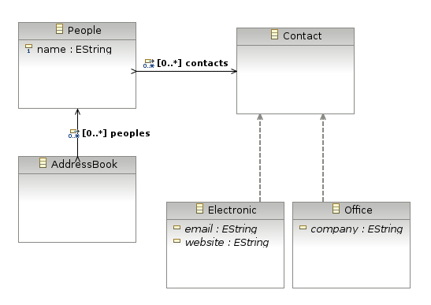
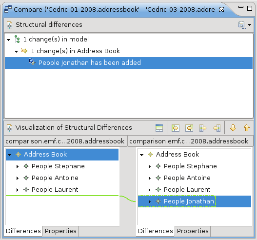
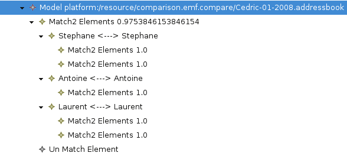
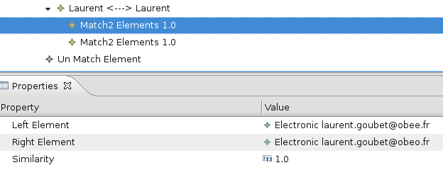
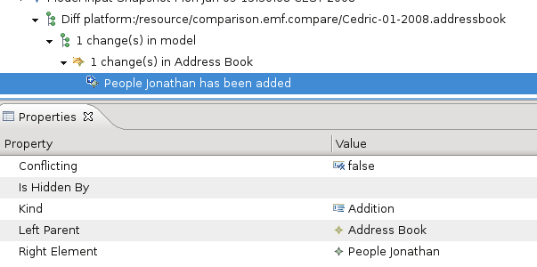

Using the Compare Services
| Authors: | Cédric |
|---|---|
| Contact: | cedric.brun@obeo.fr |
This document is a work in progress.
Copyright © 2007-2008, Obeo™.
Introduction
All the following examples will use a simple (some would say "stupid") domain model used to keep personal information, here contact lists.
Here is the diagram:
The whole comparison process is divided in two phases :
- matching both versions of the elements and providing a match model.
- computing the diff (delta) model from this match.
When comparing (using the user interface) two models conformed to the AddressBook metamodel you'll get:
This is an emfdiff model displayed using the emf compare editor. Both match and delta information are kept in this model, let's have a further look on the match part:
The match model weave elements from both versions of the model.
From this match model EMF compare is able to compute the delta (diff):
Getting the differences of two models
Getting these differences using some code is easy, here is the snippet:
private DiffModel getDiff(AddressBook v1, AddressBook v2) throws Exception {
Map options = new HashMap();
MatchModel match = MatchService.doContentMatch(v1, v2, options);
// ...
And you'll get the Match model which you can browse like any other EMF model. Let's now produce the diff from this match information:
DiffModel diff = DiffService.doDiff(match);
return diff;
}
Both Diff and Match services leverage the Eclipse architecture to find the best match/diff engine from the file extension. But EMF Compare can be used to get the differences of two models within Eclipse or out of Eclipse (standalone mode) and using it in standalone mode you'll loose the ability of "auto-picking" the right match/diff engine considering the file extension : you'll have to call the engines yourself. Here the generic one:
private DiffModel getDiff(AddressBook v1, AddressBook v2) throws Exception {
Map options = new HashMap();
MatchModel match = new GenericMatchEngine().contentMatch(v1,v2,options);
DiffModel diff = new GenericDiffEngine().doDiff(match);
return diff;
}
The generic match engine can be parameterized thanks to some options available in the MatchOptions interface:
| Name | Description | Type |
| OPTION_DISTINCT_METAMODELS | If set to true, the engine will be able to compare two models from different metamodel and find similarities. | Boolean |
| OPTION_IGNORE_ID | If set to true, the engine will ignore the Ecore ID's and will consider the elements data to match them. | Boolean |
| OPTION_IGNORE_XMI_ID | If set to true, the engine will ignore the XMI ID's and will consider the elements data to match them. | Boolean |
| OPTION_SEARCH_WINDOW | The search window is the number of elements the engine will consider at the same time, the bigger it is, more precise is the result, but slower is the process. | Integer |
| OPTION_PROGRESS_MONITOR | If set with an IProgressMonitor instance, this one will be used to monitor the match process. | IProgressMonitor |
Hint
please note that all these calls can be done with 3 models, left, right and the ancestor one. Then you'll be able to detect conflicts.
Merging the differences
Once you get the differences you can merge them. You can merge every detected delta from the diff model using the merge service:
AddModelElement add = DiffHelper.isAdded(alice, changes); MergeService.merge(add, false);
Here is a quick view of all the diff elements:

Using EMF Compare in standalone mode
You can setup your environment to use EMF Compare in standalone mode. The will looks like this
/**
* This application will try and launch an headless model comparison.
*
* @author Cedric Brun <a href="mailto:cedric.brun@obeo.fr">cedric.brun@obeo.fr</a>
*/
public final class ExampleLauncher {
/**
* This class doesn't need to be instantiated.
*/
private ExampleLauncher() {
// prevents instantiation
}
/**
* Launcher of this application.
*
* @param args
* Arguments of the launch.
*/
public static void main(String[] args) {
if (args.length == 2 && new File(args[0]).canRead() && new File(args[1]).canRead()) {
// Creates the resourceSet where we'll load the models
final ResourceSet resourceSet = new ResourceSetImpl();
// Register additionnal packages here. For UML2 for instance :
// Resource.Factory.Registry.INSTANCE.getExtensionToFactoryMap().put(UMLResource.FILE_EXTENSION,
// UMLResource.Factory.INSTANCE);
// resourceSet.getPackageRegistry().put(UMLPackage.eNS_URI, UMLPackage.eINSTANCE);
try {
System.out.println("Loading resources.\n"); //$NON-NLS-1$
// Loads the two models passed as arguments
final EObject model1 = ModelUtils.load(new File(args[0]), resourceSet);
final EObject model2 = ModelUtils.load(new File(args[1]), resourceSet);
// Creates the match then the diff model for those two models
System.out.println("Matching models.\n"); //$NON-NLS-1$
final MatchModel match = MatchService.doMatch(model1, model2, Collections
.<String, Object> emptyMap());
System.out.println("Differencing models.\n"); //$NON-NLS-1$
final DiffModel diff = DiffService.doDiff(match, false);
System.out.println("Merging difference to args[1].\n"); //$NON-NLS-1$
final List<DiffElement> differences = new ArrayList<DiffElement>(diff.getOwnedElements());
// This will merge all references to the right model (second argument).
MergeService.merge(differences, true);
// Prints the results
try {
System.out.println("MatchModel :\n"); //$NON-NLS-1$
System.out.println(ModelUtils.serialize(match));
System.out.println("DiffModel :\n"); //$NON-NLS-1$
System.out.println(ModelUtils.serialize(diff));
} catch (IOException e) {
e.printStackTrace();
}
// Serializes the result as "result.emfdiff" in the directory this class has been called from.
System.out.println("saving emfdiff as \"result.emfdiff\""); //$NON-NLS-1$
final ModelInputSnapshot snapshot = DiffFactory.eINSTANCE.createModelInputSnapshot();
snapshot.setDate(Calendar.getInstance().getTime());
snapshot.setMatch(match);
snapshot.setDiff(diff);
ModelUtils.save(snapshot, "result.emfdiff"); //$NON-NLS-1$
} catch (IOException e) {
// shouldn't be thrown
e.printStackTrace();
} catch (InterruptedException e) {
e.printStackTrace();
}
} else {
System.out.println("usage : ExampleLauncher <Model1> <Model2>"); //$NON-NLS-1$
}
}
}
Compilation
The following list of libraries will need to be in the classpath in order to compile:
- org.eclipse.emf.common 2.3 or higher
- org.eclipse.emf.ecore 2.3 or higher
- org.eclipse.emf.compare 0.8 or higher
- org.eclipse.emf.compare.diff 0.8 or higher
- org.eclipse.emf.compare.match 0.8 or higher
Launch
- All six aforementionned libraries will be required to be in the classpath for this class to run. Additionally, the following libraries
- are required:
- org.eclipse.emf.ecore.xmi 2.3 or higher